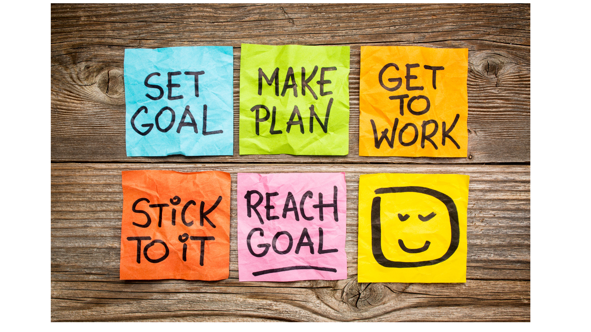
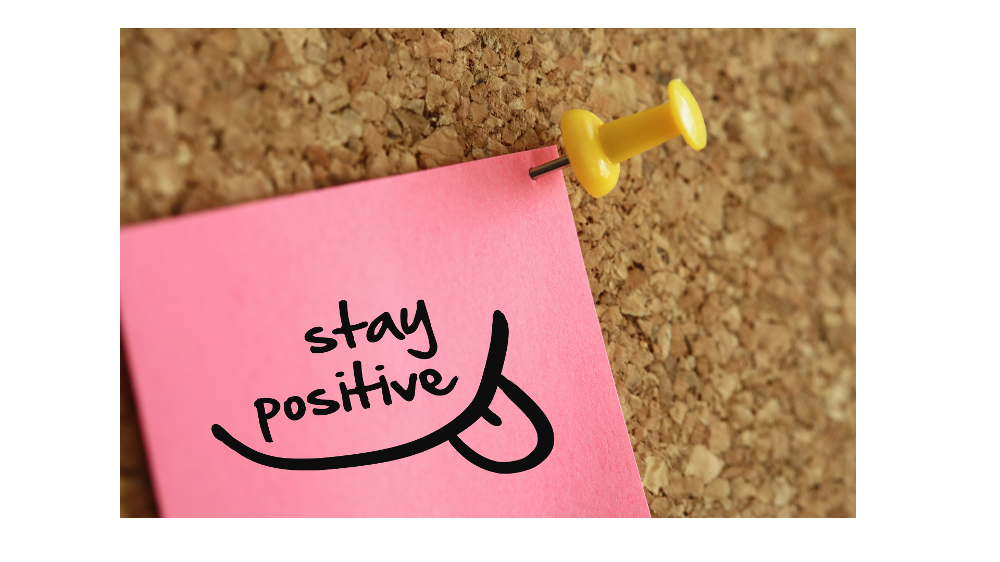
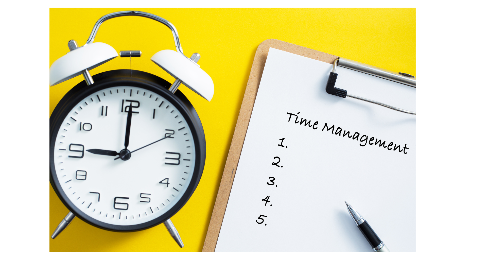
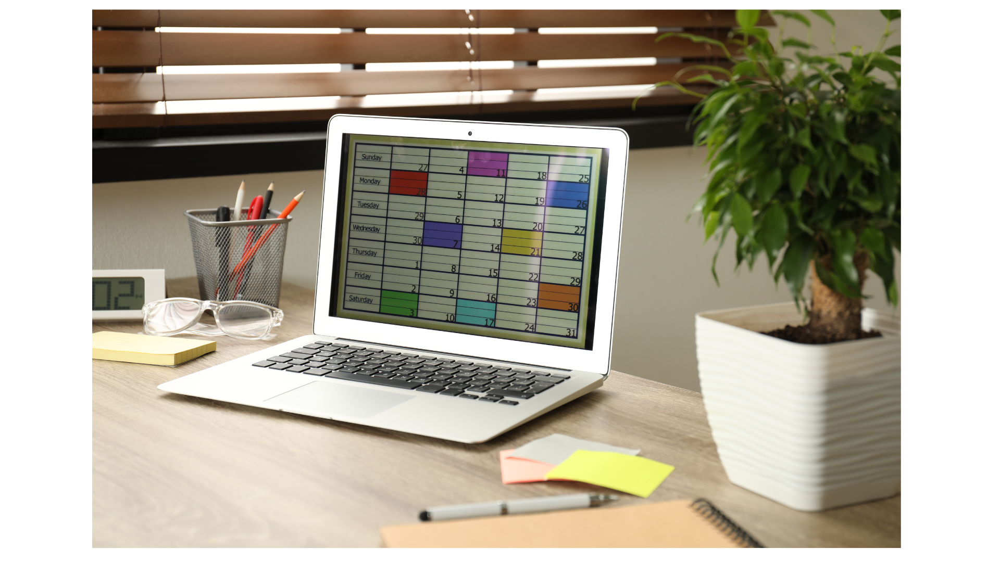
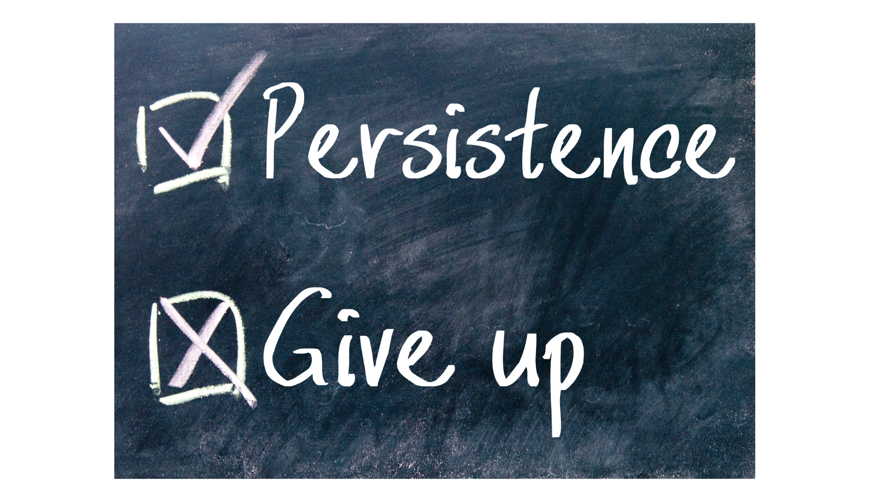
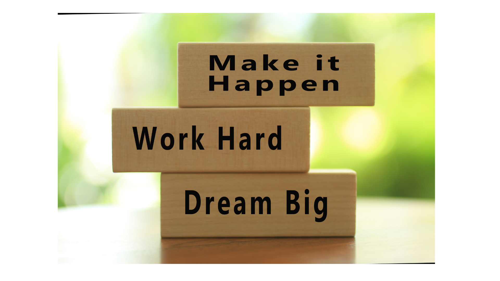
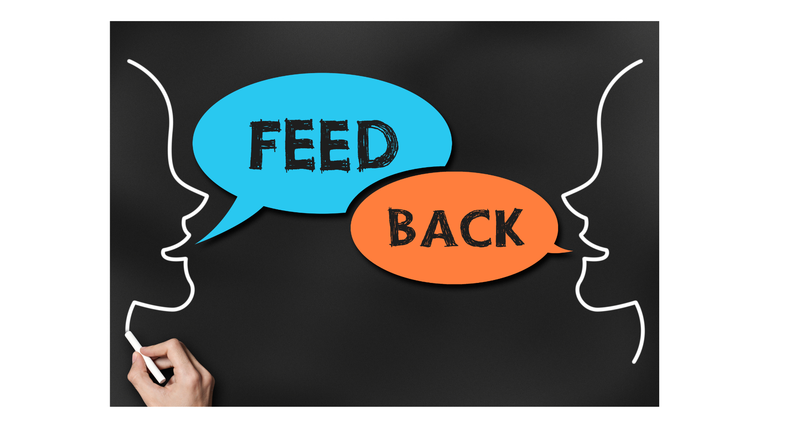

Searching for a website to aid with academic success? You made a wise decision! YMCS is your go-to source for discovering the keys to success. Welcome. This website is here to assist you in making the most of your journey toward success, a goal it sees as something we are all engaged in. The website is your go-to resource since it offers an abundance of information and advices that can help you achieve your goals and something you can relate to.
| Recommendations | Description | |
|---|---|---|
|  | Set Clear goals | With a clear goal it allows us to have a sense of direction and helps prioritize tasks, minimizing the risk of wasting time and resources. It also increases motivation and accountability |
|  | Stay Positive | Staying positive is important because it makes us feel better, helps us handle tough times, and improves our relationships with others. It's a valuable mindset that paves the way for achieving your goals and overcoming challenges more effectively. |
|  | Time Management | Time management is crucial for success as it helps us use our time efficiently. It involves focusing on important tasks, avoiding procrastination, reducing stress, and boosting productivity. This balance between work and personal life helps us achieve our goals effectively. |
| Learn to Adapt | The world is continuously changing, learning to adapt is critical for success. Adapting allows you to stay relevant, embrace new possibilities, and discover creative solutions to issues. | |
|  | Plan and Prioritize | Set clear goals, make task lists, categorize and prioritize tasks based on urgency and importance, budget time wisely, and stay organized with technology. To maximize productivity and achieve your goals effectively, review and adjust your plan on a regular basis, learn to say no when necessary, take breaks, and constantly improve your time management skills. |
|  | Be Persistent | It is a quality that allows for resilience and the ability to persevere in the face of adversity. Success frequently necessitates time and effort, and persistence ensures that one does not give up too soon, increasing the likelihood of achieving one's goals. |
|  | Work Hard | Working hard increases your chances of achieving your goals. When you work hard, all your dreams wont be too hard to reach. |
| Self Reflect | Self-reflection is an extremely effective tool for both personal and professional success. It allows you to gain self-awareness, learn from your experiences, and make positive changes that lead to a more fulfilling and purposeful life. | |
| Take care of your health | It is important to take care of your health because it provides you with the physical and mental strength to pursue your goals, manage stress, and enjoy a higher quality of life. Prioritizing your health is an investment in your future well-being and success. | |
|  | Seek Feedback | Seeking feedback is a valuable practice for self-improvement, effective communication, and personal growth. It plays a pivotal role in fostering better relationships, achieving goals, and promoting innovation, making it an indispensable component of success across different aspects of life. |